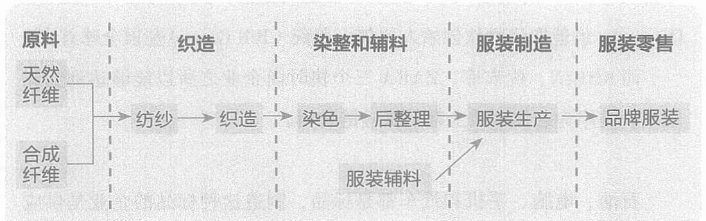

情绪消费这种个性化、随机化的商品，怎么和精密、标准、效率的供应链结合呢?
ZARA 和优衣库的核心是设计师+供应链，而SHEIN 的核心则是数字化+供应链。
我们先看一眼ZARA 和优衣库的优秀，再来看SHEIN 的迭代。
ZARA、优衣库都采用了SPA模式，即自有品牌专业零售商模式。这是一种企业全程参与商品设计、生产、物流、销售等产业环节的一体化商业模式。(注意是“全程参与”，而不是“全程拥有”。) 也就是说，从原材料到最终用户一链到底的能力，ZARA、优衣库都具备。
SPA 模式是服装业向快消品行业偷师学艺的成果。
服装业是时尚产业，卖的是新潮。流行元素瞬息万变，但它的供应链却非常长——从养蚕、养羊、种棉花，到纺织、染料、缝制，更不用说还要添加各种拉链、纽扣类的辅料(见图1-1)。
|
 |
|
|
图1-1 服装业供应链
供应链长且慢，与时尚产品快速变化的要求互相矛盾，这是所有服装企业的痛点。
020